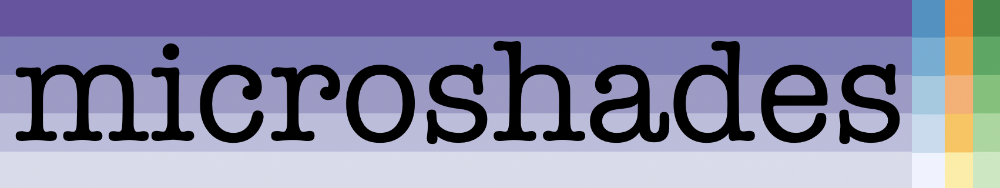
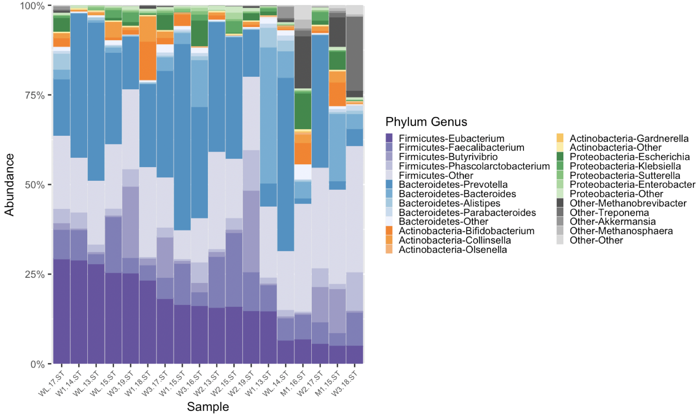
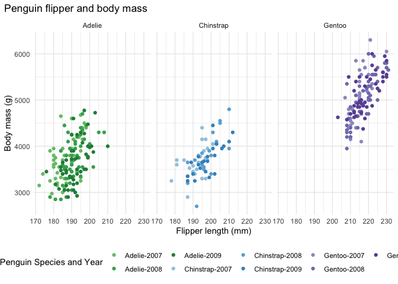
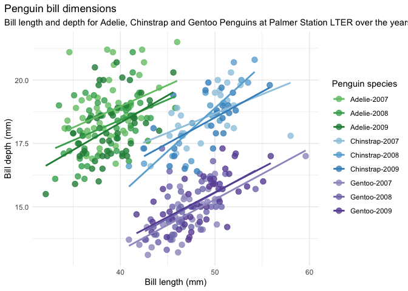

The goal of microshades is to provide a custom color organization palette that can be applied to enhance current data visualization methods. To increase accessibility of visuals created, users may select to use color vision deficient (CVD) friendly colors.
This package includes functions that work with phyloseq organized microbiome data to create stacked bar plots with advanced color organization. With microshades color organization, plots are more intuitive and accessible.
Additionally, microshades colors can be incorporated into any plot by using our palette selecting functions.
Installation
remotes::install_github("KarstensLab/microshades")If you are having trouble with installation, you may need to install packages such as phyloseq or speedyseq before installing microshades.
The shades
Here is a list of the microshades palettes, including the CVD friendly shades
library(microshades)
# main shades
names(microshades_palettes)
#> [1] "micro_gray" "micro_brown" "micro_green" "micro_orange" "micro_blue"
#> [6] "micro_purple"
# cvd shades
names(microshades_cvd_palettes)
#> [1] "micro_cvd_gray" "micro_cvd_green" "micro_cvd_orange"
#> [4] "micro_cvd_blue" "micro_cvd_turquoise" "micro_cvd_purple"To view any shade, use the function microshades_palette and specify the shade to view.
microshades_palette("micro_blue")
The CVD shades use the same function.
microshades_palette("micro_cvd_blue")To learn more about the different functions and shades in microshades, please visit the reference section of our website.
Phyloseq Combatibility
For detailed tutorials on how to use microshades function with phyloseq objects, please review the vignette articles articles on the website.
Here is an example of the plot generated with microshades on Curated Metagenomic Data of the Human Microbiome. On the left is the original stacked barplot made using phyloseq. On the right are two barplot of the same data, with microshades palettes and functions applied.

microshades uses coloring to correspond with taxonomic group and subgroup levels. In this example, the phylum and genus information are explored. Darker shades indicate the most abundant genera for each phylum, and lighter shades are less abundant. Users can additionally reorder the samples based on a specified taxonomic rank and name, or reorder the phylum groups.
Apply the microshades palette to non-microbiome data
To apply a microshades palette color to a plot, use scale_fill_manual().
The following examples use the palmerpenguins dataset to show how to apply the color palettes to non-microbiome data.
This first example examines the number of each species of penguin. The different color shades represent the island that the penguin was located.
library(palmerpenguins)
library(dplyr)
#>
#> Attaching package: 'dplyr'
#> The following objects are masked from 'package:stats':
#>
#> filter, lag
#> The following objects are masked from 'package:base':
#>
#> intersect, setdiff, setequal, union
library("ggplot2")
data(package = 'palmerpenguins')
ggplot(penguins, aes(species, fill = island)) + geom_bar() +
scale_fill_manual(values = microshades_palette("micro_green"))
This next example examines the flipper length to body mass measurements between different penguin species. To add an enhanced detail to the visual, a combination variable was created in this example that contains the species and year. The different base colors represent the species and the shades represent the year that the data was collected.
penguins_mod <- penguins %>% mutate(combination_variable = paste(species, year, sep = "-"))
hex_values <-c(microshades_palette("micro_green", 3, lightest = FALSE),
microshades_palette("micro_blue", 3, lightest = FALSE),
microshades_palette("micro_purple", 3, lightest = FALSE))
ggplot(penguins_mod, aes(x = flipper_length_mm,
y = body_mass_g)) +
geom_point(aes(color = combination_variable)) +
theme_minimal() +
scale_color_manual(values = hex_values, na.translate = FALSE) +
labs(title = "Penguin flipper and body mass",
x = "Flipper length (mm)",
y = "Body mass (g)",
color = "Penguin Species and Year") +
theme(legend.position = "bottom",
legend.background = element_rect(fill = "white", color = NA),
plot.title.position = "plot",
plot.caption = element_text(hjust = 0, face= "italic"),
plot.caption.position = "plot") +
facet_wrap(~species)
#> Warning: Removed 2 rows containing missing values (geom_point).
This last example examines the bill length to depth measurements between different penguin species. The combination variable generated for the previous example is used for this plot as well. The different base colors represent the species and the shades represent the year that the data was collected.
bill_len_dep <- ggplot(data = penguins_mod,
aes(x = bill_length_mm,
y = bill_depth_mm,
group = combination_variable)) +
geom_point(aes(color = combination_variable),
size = 3,
alpha = 0.8) +
geom_smooth(method = "lm", se = FALSE, aes(color = combination_variable)) +
theme_minimal() +
scale_color_manual(values = hex_values, na.translate = FALSE) +
labs(title = "Penguin bill dimensions",
x = "Bill length (mm)",
y = "Bill depth (mm)",
color = "Penguin species",
shape = "Penguin species") +
theme(legend.position = "right",
legend.background = element_rect(fill = "white", color = NA),
plot.title.position = "plot",
plot.caption = element_text(hjust = 0, face= "italic"),
plot.caption.position = "plot")
bill_len_dep
#> `geom_smooth()` using formula 'y ~ x'
#> Warning: Removed 2 rows containing non-finite values (stat_smooth).
#> Warning: Removed 2 rows containing missing values (geom_point).